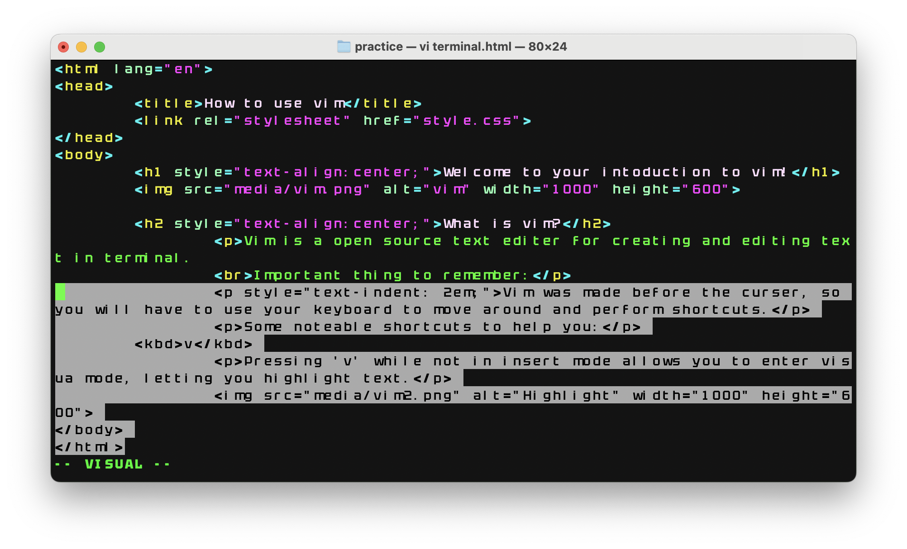

Vim is a open source text editer for creating and editing text in terminal.
Important thing to remember:
Vim was made before the curser, so you will have to use your keyboard to move around and perform shortcuts.
Some noteable shortcuts to help you in vim:
vPressing 'v' while not in insert mode allows you to enter visual mode, letting you highlight text.
Pressing "y" while selecting text in visual mode allows you to 'yoink' the text, copying it to your vim clipboard. Note that the vim clipboard and your laptop clipboard are seperate from each other.
Pressing 'p' allows you to paste whatever you have yoinked to your vim clipboard.
Pressing 'u' undos the last edit you made to your file.
When setting up a .html file, there is a specific structure you need to follow.
<!DOCTYPE html> <html lang="language code here"> <head> <title>Title here!</title> </head> <body> <h1>Heading here!</h1> <p>Text here.</p> </body> </html>